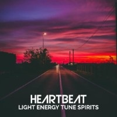

Alam Semesta Raya adalah seorang musisi Indonesia yang terkenal dengan gaya musik yang unik dan menarik. Ia menggabungkan berbagai genre musik, seperti indie, pop, dan elektronik, untuk menciptakan suara yang khas dan menawan. Musiknya yang puitis dan introspektif sering kali memikat hati para pendengar, terutama generasi Gen Z yang mencari musik yang menarik dan berarti.
Dengan gaya musiknya yang mudah dimengerti, Alam Semesta Raya berhasil menjangkau berbagai kalangan pendengar. Musiknya mengandung pesan-pesan yang relevan dan menginspirasi, tetapi tetap dapat dinikmati oleh siapa pun yang mencari suara yang menawan dan menarik. Dalam karier musiknya, Alam Semesta Raya terus berinovasi dan menciptakan karya-karya baru yang menggugah imajinasi dan menambahkan nilai pada dunia musik Indonesia, Dengan demikian, Alam Semesta Raya menjadi salah satu musisi indie Indonesia yang paling dicari oleh generasi muda
2.5M
Spotify Followers
1.8M
Monthly Listeners
3
Official Full Album